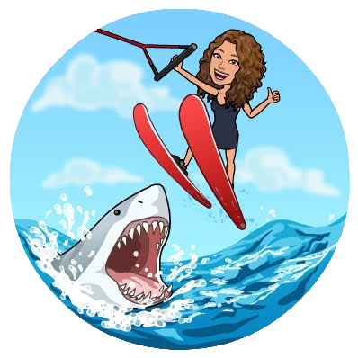

Fun facts about me
I love to explore the world, and I feel like an adventorous person. Adventure runs through my veins, fueling my spirit and driving me to seek new experiences. I thrive on the exhilaration of exploring uncharted territories, pushing boundaries, and embracing the unknown. Whether it's hiking through rugged mountains, diving into the depths of the ocean, or immersing myself in different cultures, I am always ready to embrace the thrill of the next adventure. Taking risks, stepping outside my comfort zone, and embracing the unexpected are second nature to me. I believe that life is meant to be lived to the fullest, and there is a world out there waiting to be discovered. With a heart full of wanderlust and a thirst for excitement, I am forever an adventurous soul, eager to embark on daring escapades that will create lifelong memories.
I am a person who enjoys solving mathematical problems. Mathematics has captured my heart and mind in a profound way. The elegance and logic inherent in its structures and principles resonate deeply with me. The sheer beauty of mathematical concepts and their ability to explain the complexities of the world fill me with awe and fascination. From the purity of numbers to the intricacies of geometric proofs, every equation and theorem is like a puzzle waiting to be solved.
I can describe myself as a person who enjoys the company of dogs. As a dog-loving person, my heart is filled with an immense adoration and appreciation for our furry companions. The bond I share with dogs is one of unconditional love, loyalty, and companionship. Their playful nature and unwavering affection bring immeasurable joy into my life. From the wagging of their tails to the warmth of their snuggles, their presence brightens even the gloomiest of days.
As someone who loves to go out and have fun, I radiate an infectious energy and zest for life. I thrive on the thrill of new experiences, seeking opportunities to make lasting memories and create joyous moments. Whether it's dancing the night away with friends, exploring vibrant events and festivals, or indulging in exciting activities, I am always in pursuit of laughter and adventure. Spontaneity is my middle name, and I revel in the excitement of stepping out into the world, ready to embrace the possibilities that await. From trying new cuisines to engaging in thrilling adventures, I approach each outing with enthusiasm and an open mind, always ready to make the most of every opportunity to have a good time.